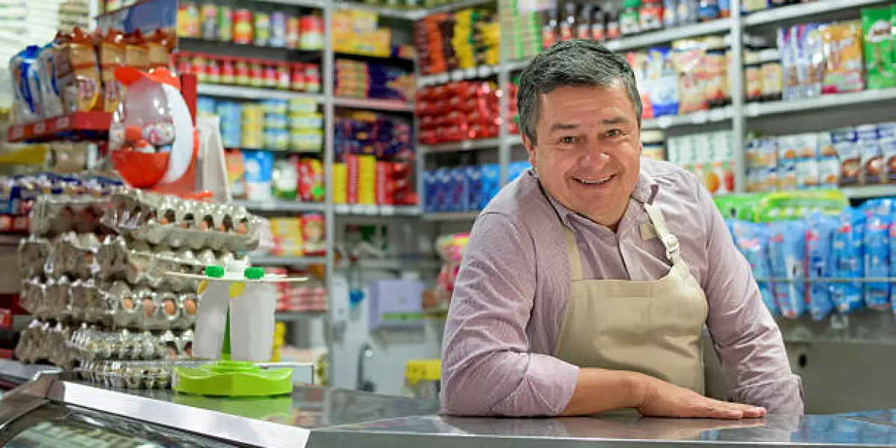
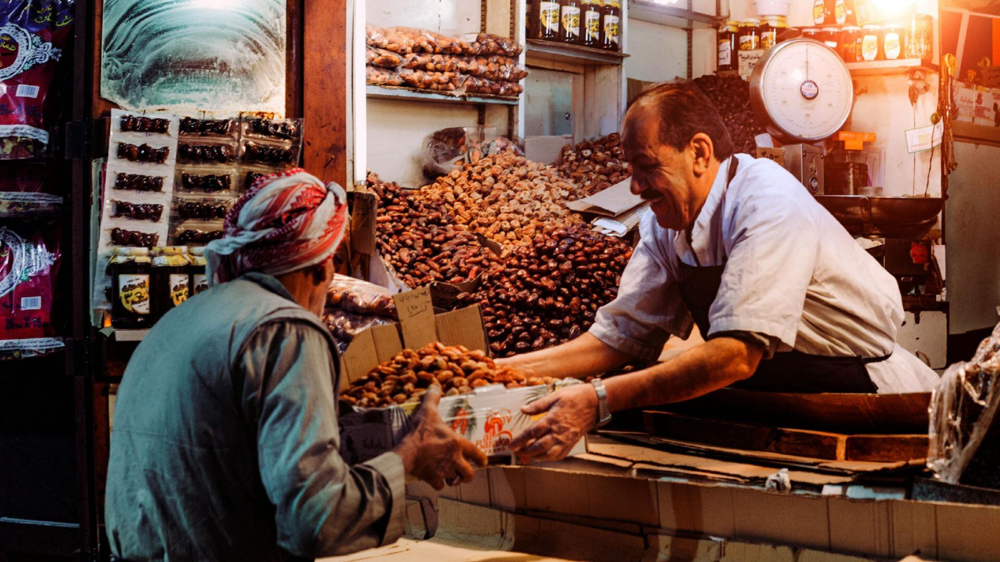
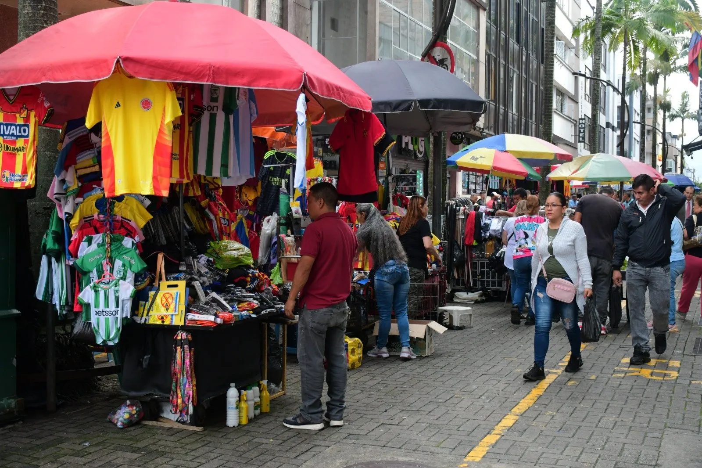

Volver a abrir no basta.
Levantar nuevamente la persiana es apenas el primer paso.
Detrás de cada puerta abierta hay una historia que merece continuar. Descubre lo nuestro y conecta con quienes hacen avanzar la ciudad.

10 de agosto de 2026
Pereira no está hecha solamente de edificios. Está hecha de personas, familias y comercios construidos durante años.
Desliza para conocer por qué nació Reactiva Pereira ↓

Después del impacto quedan las personas.
Alguien que abre temprano. Que conoce a sus clientes. Que construyó su comercio con años de trabajo.
Para una ciudad puede ser un local. Para alguien, puede ser toda una vida.

Levantar nuevamente la persiana es apenas el primer paso.
Un comercio puede estar abierto y aun así permanecer invisible.
Nuevas personas. Nuevas oportunidades. Una ciudad que vuelve a descubrir lo suyo.
Y ahí comienza Reactiva Pereira. →
Volver a conectar
Visibilidad
Un producto, una historia y un comercio pueden llegar mucho más lejos cuando encuentran una vitrina digital.
Reactivación digital
Un punto de encuentro entre quienes siguen trabajando y quienes quieren apoyar comprando local.
Comercio local
$0 Disponible Ver producto →Reactiva Pereira conecta a quienes ofrecen productos y servicios con personas que quieren descubrir y apoyar negocios de la región.
Registra su comercio y presenta sus productos o servicios dentro de Reactiva Pereira.
El marketplace organiza la información y permite que nuevos compradores encuentren el comercio.
Explora productos, conoce el negocio y encuentra nuevas razones para comprar local.
Cargando comercios…
Cargando productos…
Encuentra tu próximo favorito. Puede estar a unas calles de ti.
Descubrir productos locales →